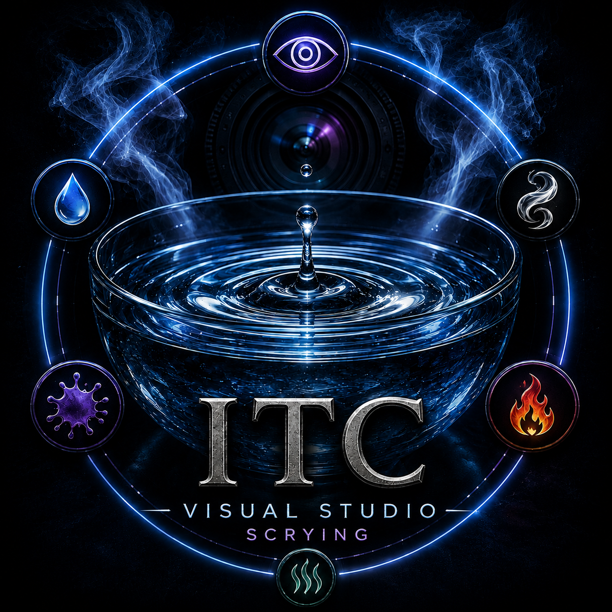

Documentation
Case notes, timeline context, equipment use, environmental observations, and reporting standards stay connected.
Technology Program
The Paranormal Initiative develops technology to help investigators document field work, preserve context, review audio and environmental data, organize research, and continue learning. The apps support human judgment; they do not replace it.

SLS Camera System
Aether Spectra SLS is a Mac-focused camera system for structured-light style field observation, visual documentation, and research-oriented review. It is part of the broader technology program, supporting investigators who need careful capture, context, and responsible interpretation.

EVP / ITC Research
ACS is an experimental audio research platform for EVP and ITC study. It is designed around phonemes and allophones rather than fixed word banks or canned phrases, creating a cleaner environment for experimentation without claiming guaranteed communication or proof.

Visual ITC Research
ITC Visual Studio is a visual experimentation workspace for researchers exploring water, steam, reflective surfaces, light movement, image review, and visual ITC session documentation. It is intended to support careful capture, comparison, and review rather than automatic interpretation.

Case Management
The Paranormal Initiative App is a structured investigation platform for case intake, location walkthroughs, baseline observation, environmental notes, evidence organization, team documentation, reporting, and repository access.
Software Use
TPI software supports ITC, EVP, paranormal research, documentation, and experimentation. Applications may be browser-based or downloadable depending on the project. The software is not open source and may not be copied, redistributed, sold, modified, reverse engineered, repackaged, or claimed as another project without written permission.
Case notes, timeline context, equipment use, environmental observations, and reporting standards stay connected.
Investigators can structure intake, baseline review, room notes, media capture, and session observations.
The apps are built to reinforce better habits, clearer terms, and more responsible evaluation in the field.